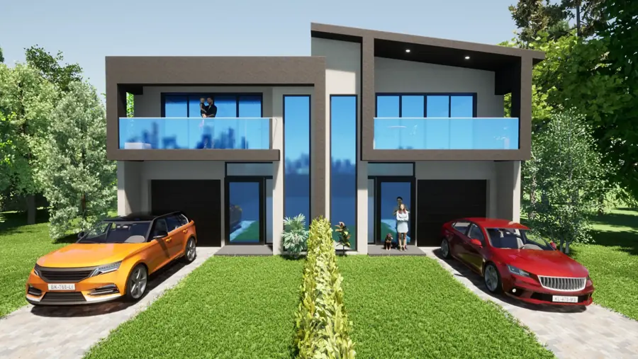

Projects since 2000. Here’s a selection.
Every project is drawn for its site, its owners and its Council. Open one to see the full set of renders.
Have a project in mind?
Tell us about it and we’ll talk through the options, free of charge.